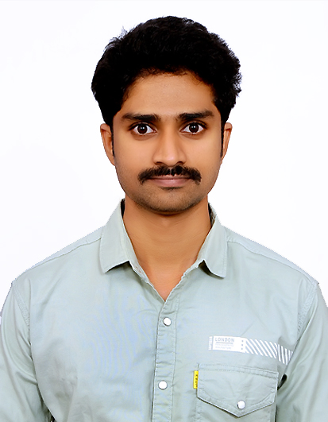

Resume
Dinesh Ummidi

|
Visakhapatnam |
|
+91-7780655622 |
|
|
ummididinesh1@gmail.com |
|
|
Dinesh Ummidi |
Languages
| English | ⭐⭐⭐⭐ |
| Hindi | ⭐⭐⭐ |
| Telugu | ⭐⭐⭐⭐⭐ |
Skills
COMPUTER SKILLS
Personal Skills
Hobbies
Resume
Objective
Intend to build a career with leading corporate hi-tech environment with committed and dedicated people, which will help me to explore myself fully and realize my potential. Willing to Work as a key player in challenging and creative environment.
Extra-Curricular Activities
- Participated in several volunteer activities & District youth leadership training programs in The National Service Scheme (NSS) at Dr.V.S.Krishna Govt. Junior College, Visakhaptnam
WORK HISTORY
Ward Volunteer - 30 Months
- Worked as Ward Volunteer in Greater Visakha Municipal Corporation, Visakhaptnam (12 Jan, 2020 – 01 Jul, 2022). The government’s flagship programme called ‘Village Volunteers System’ aims at providing government services at doorsteps of people through volunteers
Sales Represetative - 46 Months
- Worked as Sales Executive in Hermes I Tickets Private Limited (10 Aug, 2015 – 29 Jun, 2019). Hermes is well known for its innovative products, one of the widest options for customers to choose from, robust software, and comprehensive 24 x 7 services for the travel, money transfer and payments industries.
Event Organizer - 45 Months
- Worked as Event Organizer at RS Events, Visakhaptnam (15 Oct, 2011 – 01 Aug, 2015).
Event Promoter - 14 Months
- Worked as Event Promoter at Radio City, Visakhaptnam (01 Aug, 2010 – 10 Oct, 2011).
ACHIEVEMENTS
- Stood first in chess competition during schoolings.
- I got the ‘Best Performer One Time Sales for Andhra Pradesh 2016’ award while working in Hermes I Tickets Private Limited.
- Once again I got the ‘Best Employee Award' in 2018 while working at Hermes I Tickets Private Limited.
ACADEMIC QUALIFICATION
Andhra University
B.Sc | 2018
- Graduated with 65.11%
Dr.V.S.Krishna Govt. Junior College
MPC | 2010
- Graduated with 60.7%
St. Peter’s High School
SSC | 2008
- Graduated with 63.16%
CAREER GOALS
- My short term goal is get a job in reputed company, where I can utilize my skills and improve my career path.
- My long term goal is to be respectable position in that organization.
- I am confident about my work